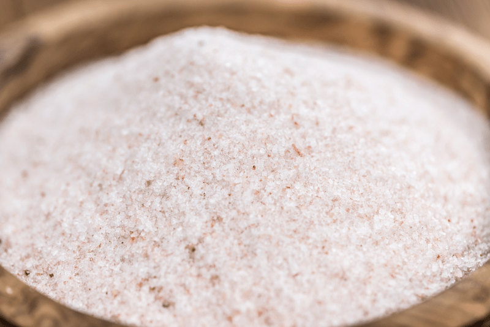

Pink Himalayan Salt
As you read through my recipes, you will come to find that I use one common ingredient in ALL of them… salt. Sweet or savory, they all get a dose of salt. For culinary purposes, “saltiness” is one of the five primary basic tastes that our tongue can detect.

Those five tastes being: salt, bitter, sweet, sour, and umami. Also, salt is not only a flavoring agent but also used in preserving foods. It acts as a preservative by drawing out moisture from food, which is essential to microbial growth. Many pathogenic microbes are also simply unable to grow in the presence of salt. But, I am not here to talk about preserving food.
Salt also has magical culinary skills. By adding small amounts of salt to sweet foods… it intensifies and balances out the sweetness… by adding salt to cruciferous veggies, it reduces the bitter taste in them. Tricky little grain of salt, huh? I am not talking about just any ole’ salt here. We have to be picky about what type of salt we use, not only flavor-wise but more importantly, for health-wise.
Pink Himalayan Sea Salt
Himalayan salt is mined from ancient sea beds, unadulterated, so it is pure from modern environmental toxins. It provides 84 trace minerals, plus a unique ionic energy that is released when the salt is mixed with water. It’s true that all-natural, Himalayan Pink Salt is free of any additives or anti-caking agents… but always read labels and learn about the brands that you purchase.
Adrenal Support
Did you know that by drinking a glass of water with salt in it, first thing upon awakening can support your adrenal health? I have been working on creating a nightly habit that benefits my morning routine. Which then causes a ripple effect for the rest of my day. In the evening I mix a half teaspoon of a high quality pink Himalayan salt in a glass of water. I set it on my nightstand and before even getting out of bed, I sit up and drink the whole darn-tootin thing.
I like to think of the adrenals as the battery pack to the body, without them, you would not be able to function, at all. They help to manage our stress response, they produce more hormones than any other gland in the body, balance and manage salt and potassium levels. They also assist with both blood pressure and blood sugar regulation and provide energy when needed. So as you can see, they are pretty darn important.
Keep those “batteries” charged!
When our adrenal batteries are running on low, it affects our energy (and many other things) and that is why we turn to stimulants to get us through the day. Coffee, caffeinated teas, chocolate are just a few that we often turn to and it is possible that with long-term use, we can burn those precious adrenals right out. I did read that if you drink coffee, add a pinch of salt, maca, or shilajit to offset the negative effect of caffeine. Not sure about the science behind that but there ya go.
Ok, this post was supposed to be about salt and I got all carried away about the adrenal glands. Maybe my inner conscience is trying to tell me something. :) Not to worry… I am paying attention! So back to the salt. Again, I am not referring to that white table salt that you see in the restaurants (or maybe in your pantry? eeep). I am talking about the pink Himalayan salts, the Celtic salts, and other top quality salts. As I mentioned above, they contain 84 trace minerals…
So what can those 84 trace minerals do for you?
- Create an electrolyte balance.
- Increases hydration.
- Regulate water content both inside and outside of cells Balance pH (alkaline/acidity) and help to reduce acid reflux.
- Prevent muscle cramping. The trace minerals and pH in real salt help alleviate muscle cramps.
- Aid in proper metabolism functioning.
- Strengthen bones.
- Lower blood pressure.
- Help the intestines absorb nutrients.
- Prevent goiters.
- Improve circulation.
- Dissolve and eliminate sediment to remove toxins.
- Helps against adrenal fatigue.
© AmieSue.com